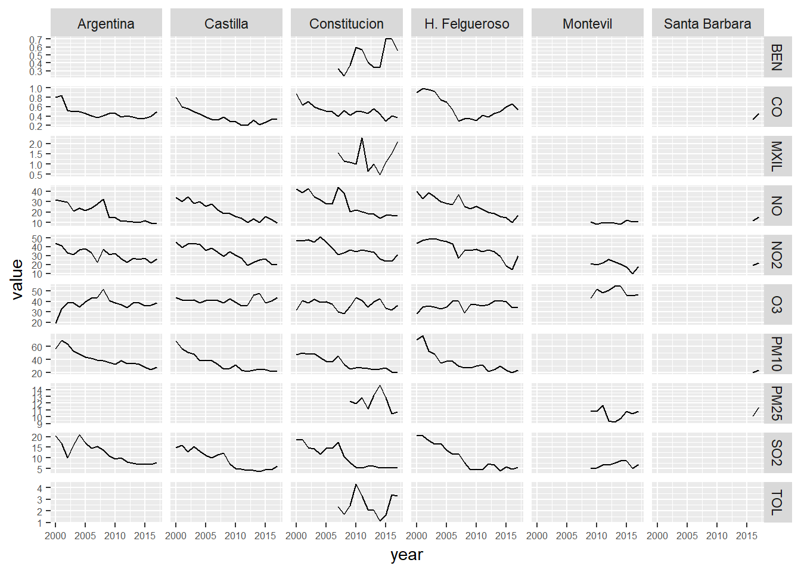

3 Visualizaciones
Cargamos paquetes
library(tidyverse)
library(bookdown)
library(rmarkdown)
library(readr)
library(dplyr)
library(tidyr)
library(purrr)
library(lubridate)
library(ggplot2)
library(stringr)
library(knitr)
#library(xts)
#library(zoo)
#library(gridExtra)
#library(fpp2)
#library(RcppRoll)
#library(kableExtra)
options(knitr.table.format = "html")Cargamos los datos
air_data_2 <- readRDS("data_rds/air_data_2.rds")Echamos un vistazo a las variables
glimpse(air_data_2)## Observations: 722,768
## Variables: 31
## $ station <fct> 1, 1, 1, 1, 1, 1, 1, 1, 1, 1, 1, 1, 1, 1, 1, 1, ...
## $ station_name <fct> Estación Avenida Constitución, Estación Avenida ...
## $ latitude <dbl> 43.52981, 43.52981, 43.52981, 43.52981, 43.52981...
## $ longitude <dbl> -5.673428, -5.673428, -5.673428, -5.673428, -5.6...
## $ date_time_utc <dttm> 2000-01-01 00:00:00, 2000-01-01 01:00:00, 2000-...
## $ SO2 <dbl> 23, 29, 40, 50, 39, 39, 40, 43, 38, 39, 48, 66, ...
## $ NO <dbl> 89, 73, 53, 46, 35, 26, 27, 37, 30, 32, 33, 35, ...
## $ NO2 <dbl> 65, 60, 57, 53, 50, 49, 51, 48, 46, 39, 36, 39, ...
## $ CO <dbl> 1.97, 1.61, 1.13, 1.06, 0.95, 0.82, 0.83, 0.88, ...
## $ PM10 <dbl> 53, 63, 56, 58, 50, 50, 57, 53, 40, 53, 54, 52, ...
## $ O3 <dbl> 9, 8, 7, 5, 6, 7, 7, 4, 5, 6, 10, 9, 11, 9, 18, ...
## $ wd <dbl> 245, 222, 228, 239, 244, 218, 240, 248, 244, 235...
## $ ws <dbl> 0.34, 1.06, 0.71, 0.84, 0.89, 0.71, 0.80, 1.11, ...
## $ TMP <dbl> 5.7, 5.4, 5.3, 5.1, 4.6, 4.6, 4.5, 4.1, 3.8, 3.8...
## $ HR <dbl> 76, 73, 72, 71, 72, 69, 68, 69, 70, 70, 64, 59, ...
## $ PRB <dbl> 1026, 1025, 1025, 1025, 1024, 1024, 1024, 1026, ...
## $ RS <dbl> 33, 33, 33, 33, 33, 33, 33, 33, 35, 112, 171, 36...
## $ LL <dbl> 0, 0, 0, 0, 0, 0, 0, 0, 0, 0, 0, 0, 0, 0, 0, 0, ...
## $ BEN <dbl> NA, NA, NA, NA, NA, NA, NA, NA, NA, NA, NA, NA, ...
## $ TOL <dbl> NA, NA, NA, NA, NA, NA, NA, NA, NA, NA, NA, NA, ...
## $ MXIL <dbl> NA, NA, NA, NA, NA, NA, NA, NA, NA, NA, NA, NA, ...
## $ PM25 <dbl> NA, NA, NA, NA, NA, NA, NA, NA, NA, NA, NA, NA, ...
## $ station_alias <fct> Constitucion, Constitucion, Constitucion, Consti...
## $ year <dbl> 2000, 2000, 2000, 2000, 2000, 2000, 2000, 2000, ...
## $ month <dbl> 1, 1, 1, 1, 1, 1, 1, 1, 1, 1, 1, 1, 1, 1, 1, 1, ...
## $ date <date> 2000-01-01, 2000-01-01, 2000-01-01, 2000-01-01,...
## $ week_day <dbl> 6, 6, 6, 6, 6, 6, 6, 6, 6, 6, 6, 6, 6, 6, 6, 6, ...
## $ hour <int> 0, 1, 2, 3, 4, 5, 6, 7, 8, 9, 10, 11, 12, 13, 14...
## $ holiday_type <chr> NA, NA, NA, NA, NA, NA, NA, NA, NA, NA, NA, NA, ...
## $ no_lab_days <chr> NA, NA, NA, NA, NA, NA, NA, NA, NA, NA, NA, NA, ...
## $ wd_code <fct> WS, SW, SW, WS, WS, SW, WS, WS, WS, SW, SW, SW, ...Obtenemos las medias anuales de todos los contaminantes por estación y las plasmamos en un gráfico para observar sus evoluciones
# Calculamos las medias anuales
year_avgs <- air_data_2 %>% select(station_alias, date_time_utc, PM10, PM25, SO2, NO2, NO, O3, BEN, CO, MXIL, TOL) %>%
group_by(station_alias, year = year(date_time_utc)) %>%
summarise_all(funs(mean(., na.rm = TRUE))) %>%
select(-date_time_utc) # We drop this variable
# Convertimos los resultados a formato largo
year_avgs_long <- gather(year_avgs, contaminante, value, 3:length(year_avgs)) %>%
filter(!(grepl('Constit', station_alias)
& year == '2006' &
contaminante %in% c('BEN', 'MXIL', 'TOL'))) %>%
# We filter this data because is only completed in 0.01%
filter(!(grepl('Constit', station_alias) &
year == '2008' & contaminante == 'PM25'))
# We filter this data because is only completed in 0.02%
# Finalmente representamos los indicadores generados en una tabla de gráficos
ggplot(year_avgs_long, aes(x = year, y = value)) +
geom_line() +
facet_grid(contaminante~station_alias,scales="free_y") +
theme(axis.text = element_text(size = 6))
Nos quedamos sólo con el contaminante PM10
year_avgs_long_pm10 <- year_avgs_long %>% filter(contaminante == "PM10",
station_alias != "Montevil")
ggplot(year_avgs_long_pm10, aes(x = year, y = value)) +
geom_line() +
facet_grid(contaminante~station_alias,scales="free_y") +
theme(axis.text = element_text(size = 6)) + ylim(0, 100)ggplot(year_avgs_long_pm10, aes(x = year, y = value, group = station_alias, color = station_alias)) +
geom_line() +
ylim(0, 100)